INTRODUCTION
Today we are assembling a 4-wheel robot base. You will learn:
- How the L298N motor driver works
- How to the wire four DC motors
- What each pin on the motor driver does
- How to mount the electronics using female–female standoffs
- How to connect the motor driver to the arduino/esp32
1.0 Car Base Building
1.1 List of Components for Car Base

- 2 x chassis
- 4 x wheel
- 4 x TT Motor
- 8 x M3*30 Screw
- 8 x Fastener
- 6 x M3*8 Screw
- 8 x M3 Nut
- 6 x L30+6 F-F Standoffs
1.2 Steps of Assembly
| 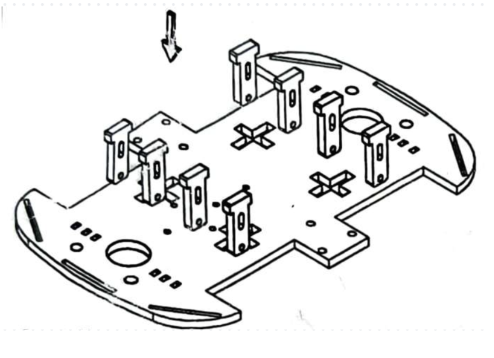 Step 1: Insert the fasteners into the chassis after tearing off the yellow protection wraps of the chassis, the fasteners and the code wheels. |
 Step 2: Install the code wheels and fix the motors to the chassis. (Attention: The copper sheets of the leading wires of the motors should face outward, on the same side as the wheels) |
| 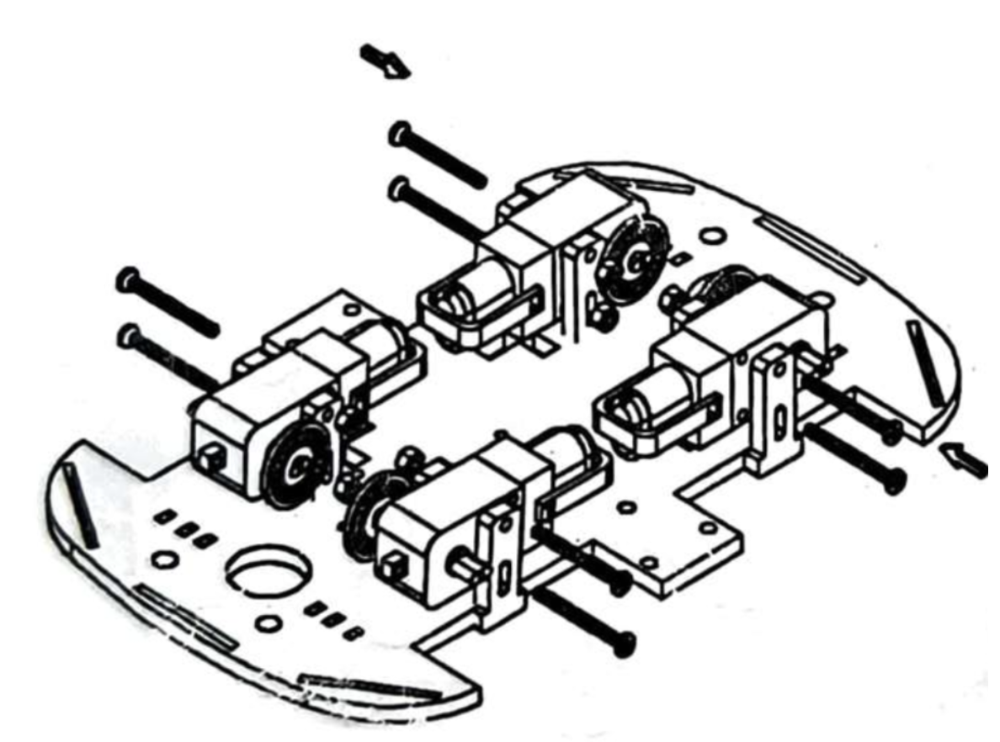 Step 3: After fixing the motors to the chassis, insert and tighten the screws. |
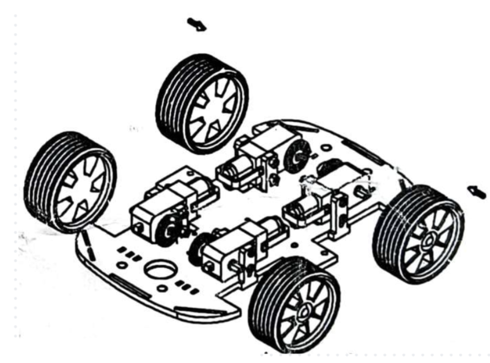 Step 4: Hold the chassis tightly and insert the wheels to the motors. |
| 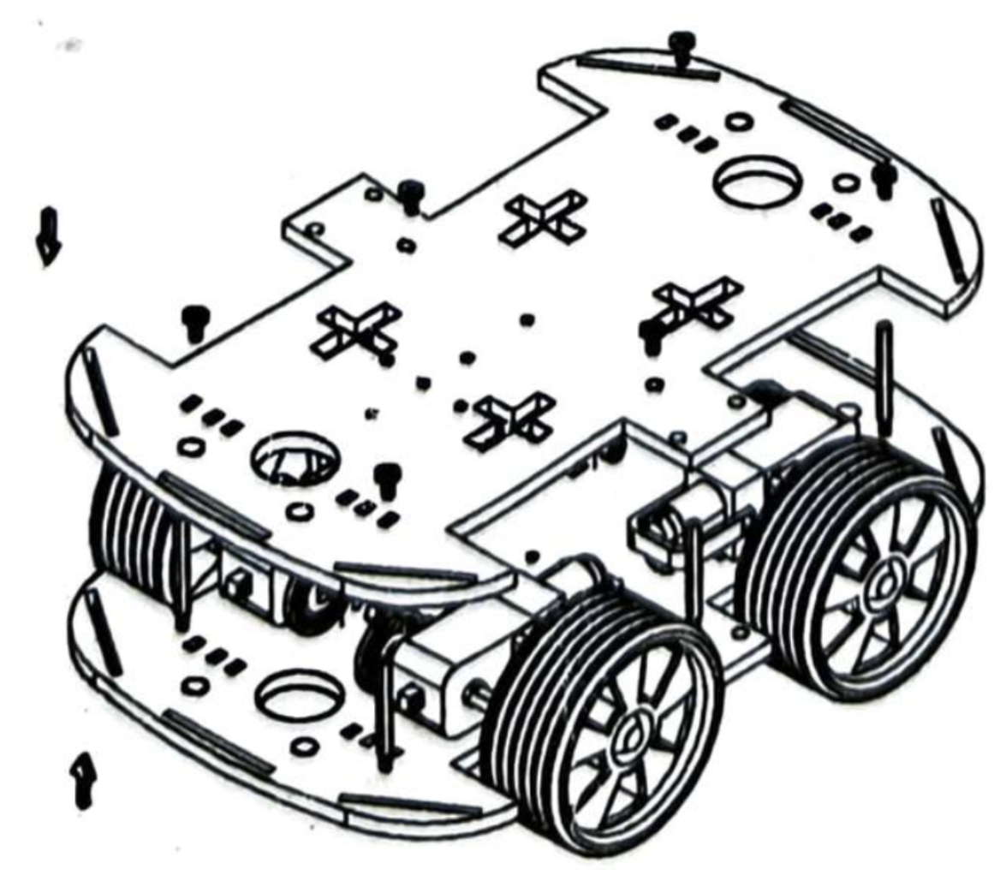 Step 5: Insert the spacers, tighten them with screws from the bottom and then with screws from the upper side. Installation is then completed. |
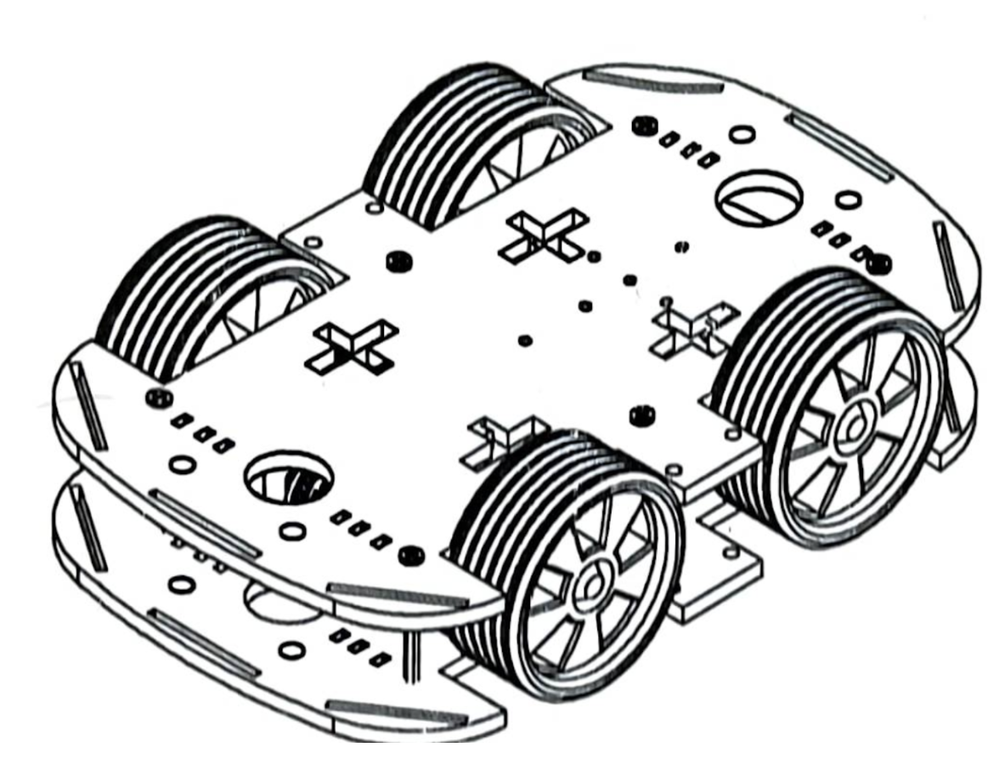 Completed installation |
1.3 Understanding the L298N Motor-Driver
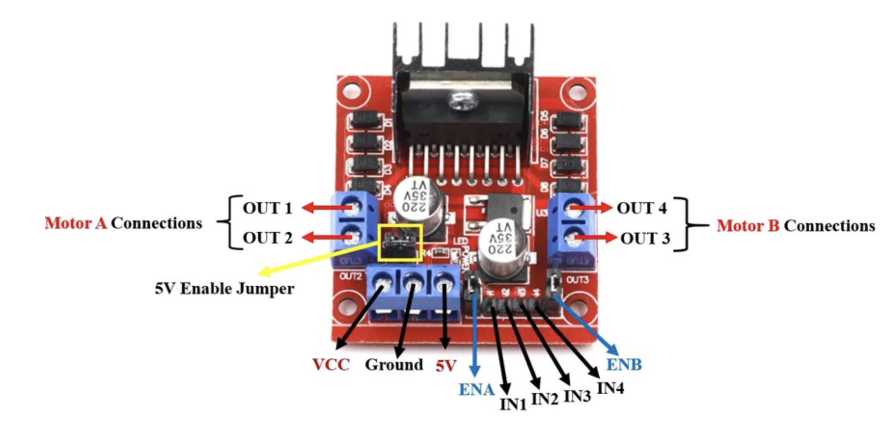NOTE: When connecting the wires, the actual slot does not matter as long as positive and negative are in the same place.
Motor A (left side)
- OUT1
- OUT2
These are where the first pair of motors will connect to the top two motors in Figure 1.2.
Motor B (Right Side)
- OUT3
- OUT4
These are where the second pair of motors will connect to the bottom two motors.
1.4 Control Pins
NOTE: They are shown on the bottom row of Figure 1.1.
IN1, IN2
- Control direction for Motor A
- IN1 HIGH + IN2 LOW → forward
- IN1 LOW + IN2 HIGH → reverse
IN3, IN4
- Control direction for Motor B
- Same logic as above
Power Section (Bottom Left – VCC, GND, 5V)
VCC
- The main motor power input
- Connect to battery
GND
- Battery ground
- MUST also connect to ESP32 GND
- Common Ground which is connected to ESP32 and Battery is required for signals to make sense.
5V
- Supplies 5V to Arduino only if the 5V Enable Jumper is installed.
1.5 Wiring the Motors (Using Labelled OUT Pins)
Channel A → OUT1 & OUT2
Connect both front motors in parallel:
- Red wires → OUT1
- Black wires → OUT2
Channel B → OUT3 & OUT4
Connect both rear motors in parallel:
- Red wires → OUT3
- Black wires → OUT24
Remember to explain polarity:
“If a motor spins backwards, swap the two wires. Don’t change the code; just flip the wires.”
1.6 Mounting Everything With Standoffs

Purpose of the standoffs:
- Lifts the electronics platform
- Prevents short circuits
- Provides space for motor wires and battery
- Makes the robot look neat and stable
1.7 How to Install
- Insert four screws at each corner of the chassis from the bottom of the chassis into the standoff.
- The standoff becomes a vertical pillar.
- Place the electronics plate (top deck) on the standoffs.
- Secure with screws from the top.
- Mount the L298N and Arduino/ESP32 onto the elevated platform.
NOTE: Ignore the Enable pins as we will not be needing them in this workshop.
 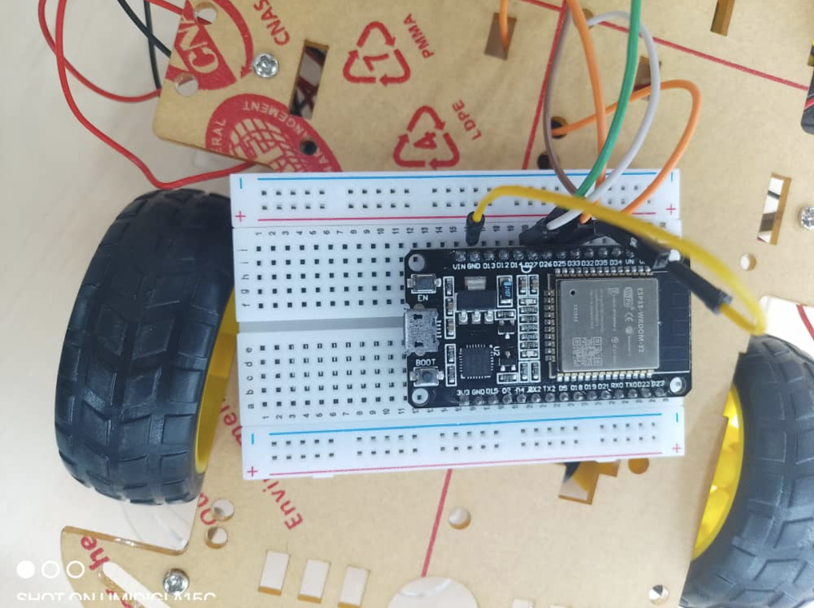
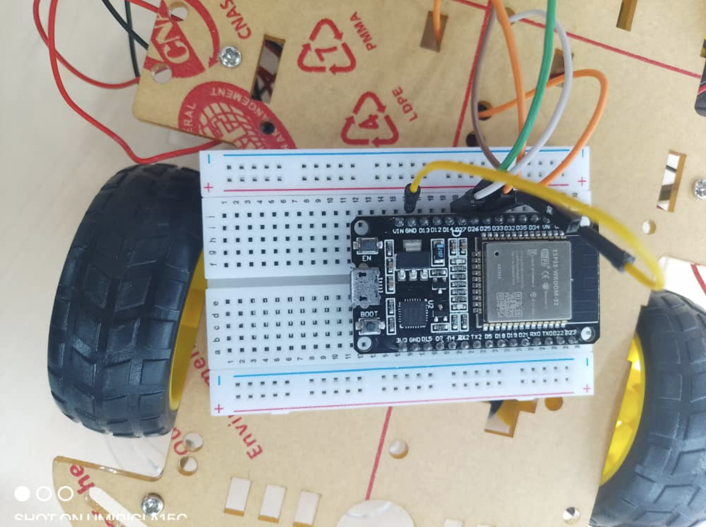
Connecting the Motor driver to The ESP32 (pins can be changed)
| L298N Pin | Connection on ESP32 | |
|---|---|---|
| IN1 | D33 | Motor A direction |
| IN2 | D25 | Motor A direction |
| IN3 | D26 | Motor B direction |
| IN4 | D27 | Motor B direction |
| GND | GND | Common ground |
2.0 ESP32
ESP32 is a powerful microcontroller used in robotics, IoT, and automation projects. It comes with:
- Dual-core processor (up to 240 MHz)
- WiFi + Bluetooth
- Multiple GPIO pins
- ADC (Analog inputs)
- PWM pins for motors/servos
- UART, I2C, SPI communication support
Power Pins
- 3.3V → Power sensors & logic
- 5V → Input from USB
- GND → Common ground
GPIO Pins
Flexible pins used for digital input/output.
ADC Pins (Analog Input)
- Pins 32, 33, 34, 35, 36, 39
PWM Pins (Servo/Motor Signal)
Almost all GPIOs support PWM
Best to use: GPIO 18, 19, 21, 22, 23, 25, 26, 27
UART Pins (Serial Communication)
- TX0/RX0 (default)
- Can remap to other GPIOs
2.0 Steps to Connect ESP32 to Your Laptop
Step 1: Install Arduino IDE
Latest version recommended.
Step 2: Install ESP32 Boards
1  Download this under Board Manager |
2 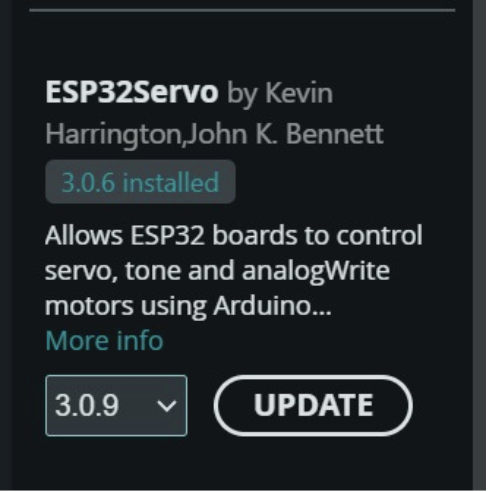Download under Library |
Step 3: Debugging Process for Port Identification
Step 1
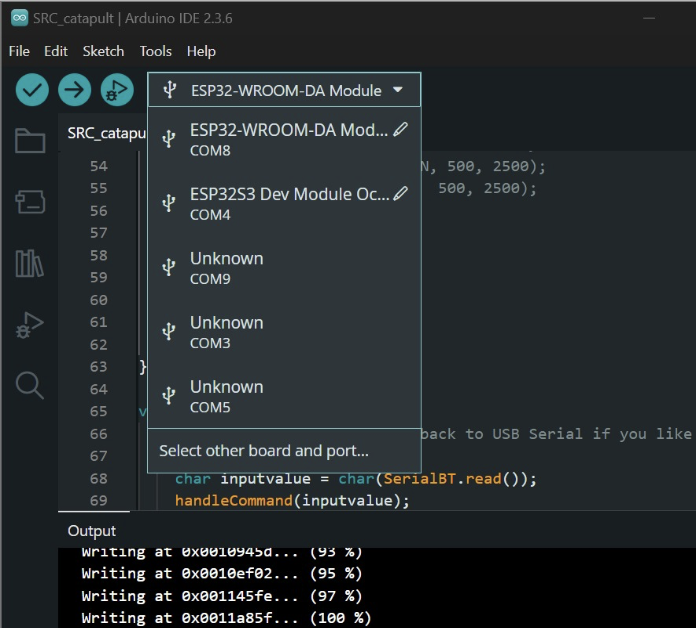Step 2
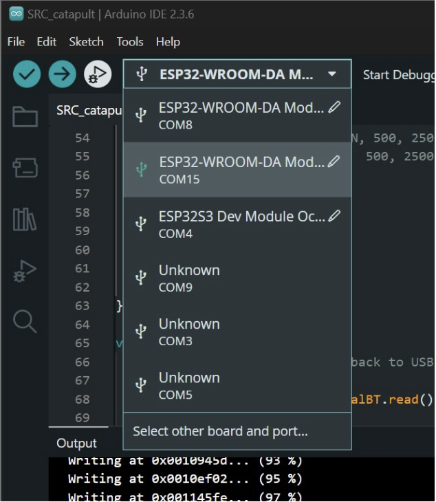Step 3
Select the new port and click "Select other board and port...."
Then select ESP32-WROOM-DA-Module for the board.
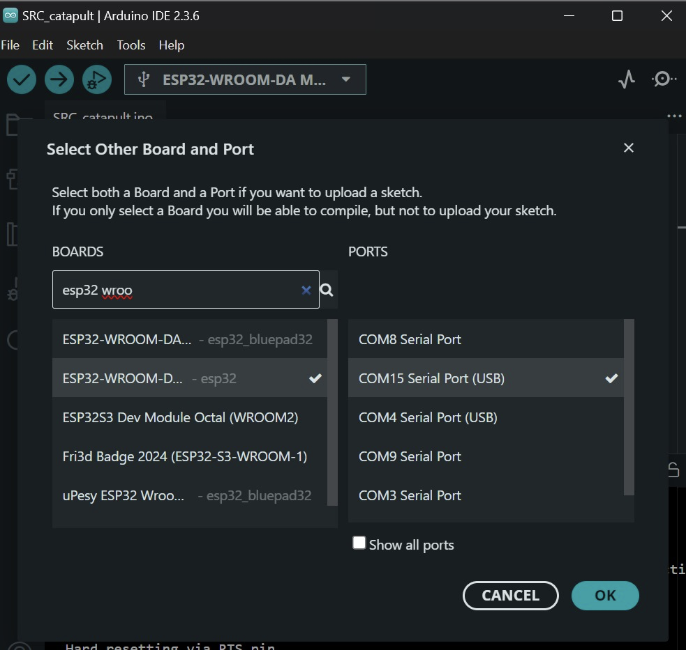Step 4: First Test Program (Blink)
Paste this in Arduino IDE:
void setup() {
pinMode(2, OUTPUT);
}
void loop() {
digitalWrite(2, HIGH);
delay(1000);
digitalWrite(2, LOW);
delay(1000);
}
Press the BOOT button continuously when you see "Connecting" until the upload continues.
Upload → If the LED blinks → ESP32 is working perfectly.
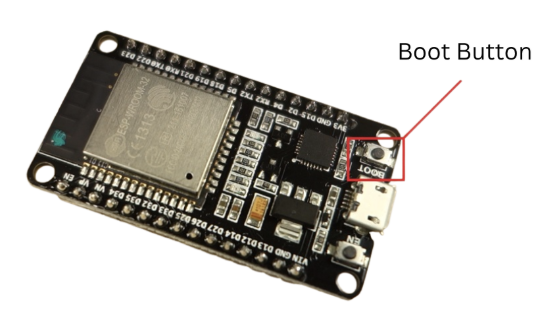Step 5: Controlling the Robot Car
#include <BluetoothSerial.h>
BluetoothSerial SerialBT;
#define LED_PIN 2
#define IN1 33
#define IN2 25
#define IN3 26
#define IN4 27
void setup() {
SerialBT.begin("ESP32Bot");
pinMode(LED_PIN, OUTPUT);
digitalWrite(LED_PIN, HIGH);
pinMode(IN1, OUTPUT);
pinMode(IN2, OUTPUT);
pinMode(IN3, OUTPUT);
pinMode(IN4, OUTPUT);
}
void loop() {
if (SerialBT.available()) {
char c = SerialBT.read();
handleCommand(c);
}
}
void handleCommand(char c) {
if (c == 'F') { // Forward
digitalWrite(IN1, HIGH);
digitalWrite(IN2, LOW);
digitalWrite(IN3, HIGH);
digitalWrite(IN4, LOW);
}
else if (c == 'B') { // Backward
digitalWrite(IN1, LOW);
digitalWrite(IN2, HIGH);
digitalWrite(IN3, LOW);
digitalWrite(IN4, HIGH);
}
else if (c == 'L') { // Left
digitalWrite(IN1, HIGH);
digitalWrite(IN2, LOW);
digitalWrite(IN3, LOW);
digitalWrite(IN4, LOW);
}
else if (c == 'R') { // Right
digitalWrite(IN1, LOW);
digitalWrite(IN2, LOW);
digitalWrite(IN3, HIGH);
digitalWrite(IN4, LOW);
}
else if (c == 'A') { // Diagonal
digitalWrite(IN1, HIGH);
digitalWrite(IN2, LOW);
digitalWrite(IN3, LOW);
digitalWrite(IN4, HIGH);
}
else if (c == 'S') { // Stop
digitalWrite(IN1, LOW);
digitalWrite(IN2, LOW);
digitalWrite(IN3, LOW);
digitalWrite(IN4, LOW);
}
}
Step 6: Bluetooth
 |
 |
 |
 |
 |
 |
3.0 Buck Converter
1. What Is a Buck Converter?
A buck converter reduces a higher voltage (ex: battery) to a lower voltage (ex: 5V).
For robotics:
Smooth power
High current
Stable voltage → no random resets
2. Diagram Input Side
7V–24V battery or adapter
Positive → VIN
Negative → GND
Output Side (USB Female)
Output is fixed at 5V
Connect USB cable → ESP32
or USB splitter → multiple devices
4.0 Servo Motor Calibration
What is Servo Calibration?
Calibration ensures:
- Each servo starts at the correct zero (home) angle
- Movements are symmetrical
- All legs/arms/links start from the same mechanical reference
- This prevents mechanical binding and burnt gears.
Why do we calibrate?
- So all legs/arms behave identical
- To avoid torque overload
- To ensure accurate walking / rotation / gripping
- To protect expensive servos (especially MG996R, DS3218, etc.)
Our Project’s Servo Calibration Steps
Step 1: Power the Servo Correctly
- Use the buck converter → 6V (or 5V if servo is cheap)
- Never power servos from Arduino 5V pin
Step 2: Upload the Centering Code
#include <Servo.h> // 1) Required library
// 2) Pin definitions
#define SERVO_PIN 18 // PWM pin connected to servo signal
// 3) Angle conversion constants
const int SERVO_MIN_ANGLE = 0;
const int SERVO_MAX_ANGLE = 180;
const int SERVO_CENTER = 90; // Default center value
// 4) Global variables
Servo myServo; // Servo object
int offset = 0; // Offset for fine-tuning the center
// 5) Helper function for calibration
void moveToAngle(int angle) {
int correctedAngle = angle + offset;
// Limit protection
if (correctedAngle < SERVO_MIN_ANGLE) correctedAngle = SERVO_MIN_ANGLE;
if (correctedAngle > SERVO_MAX_ANGLE) correctedAngle = SERVO_MAX_ANGLE;
myServo.write(correctedAngle);
delay(800);
}
// 6) SETUP FUNCTION
void setup() {
Serial.begin(115200);
myServo.attach(SERVO_PIN);
Serial.println("Starting Servo Calibration...");
Serial.println("Centering Servo...");
moveToAngle(SERVO_CENTER);
}
// 7) LOOP FUNCTION
void loop() {
// TEST FULL RANGE
Serial.println("Moving to 0 degrees...");
moveToAngle(0);
Serial.println("Moving to 90 degrees...");
moveToAngle(90);
Serial.println("Moving to 180 degrees...");
moveToAngle(180);
Serial.println("Returning to center...");
moveToAngle(90);
delay(1500);
}
1) Required Libraries
#include <Servo.h>
2) Pin Definitions
#define SERVO_PIN 18
3) Angle Conversion Constants
const int SERVO_MIN_ANGLE = 0;
const int SERVO_MAX_ANGLE = 180;
const int SERVO_CENTER = 90;
4) Global Variables
Servo myServo;
int offset = 0;
5) Calibration Helper Function
void moveToAngle(int angle) {
int correctedAngle = angle + offset;
if (correctedAngle < SERVO_MIN_ANGLE) correctedAngle = SERVO_MIN_ANGLE;
if (correctedAngle > SERVO_MAX_ANGLE) correctedAngle = SERVO_MAX_ANGLE;
myServo.write(correctedAngle);
delay(800);
}
6) Setup Function
void setup() {
Serial.begin(115200);
myServo.attach(SERVO_PIN);
Serial.println("Starting Servo Calibration...");
Serial.println("Centering Servo...");
moveToAngle(SERVO_CENTER);
}
7) Loop Function
void loop() {
moveToAngle(0);
moveToAngle(90);
moveToAngle(180);
moveToAngle(90);
delay(1500);
}